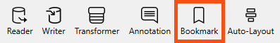
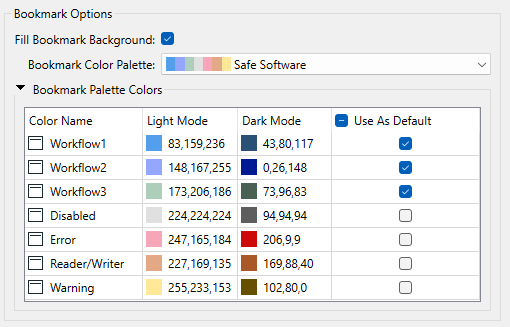
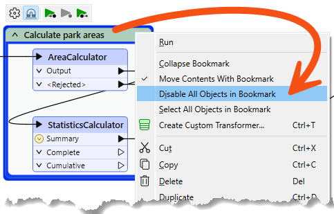

If you create a bookmark while objects are selected, the bookmark automatically expands to include those items.
After completing this lesson, you’ll be able to:
Like its real-world namesake, a bookmark is a means of putting a marker down for easy access.
With FME, the bookmark covers an area of the workspace that usually carries out a specific task, so a user can pick it out of a broader set of transformers and move to it with relative ease.
Bookmarks make your workspace more straightforward to understand and navigate.
To add a bookmark, click the Bookmark icon on the toolbar.

Whereas a traditional bookmark marks a single page in a book, an FME bookmark can cover a wide canvas area. You can divide a single workspace into different sections by applying multiple bookmarks.
If you create a bookmark while objects are selected, the bookmark automatically expands to include those items.
To resize a bookmark, hover over a corner or edge and drag the cursor to change its size or shape.

Bookmark Properties
Click the cogwheel icon on a bookmark header to open the bookmark properties dialog:

Here, you can change the bookmark's name and color and decide whether the contents will move (more on that later).
You can set bookmark colors to an existing color palette or use custom colors. Additionally, you can create customized palettes by going to Tools > FME Options... > Appearance:

The context (right-click) menu for a bookmark reveals options to select all objects within the bookmark or to disable all of those objects, making it useful for testing purposes:
